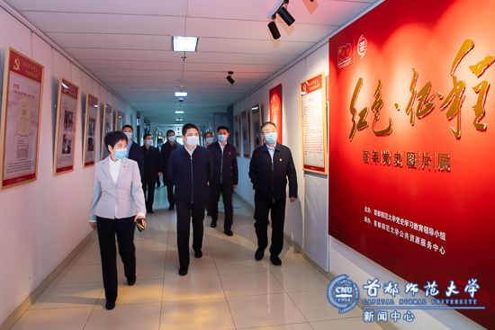
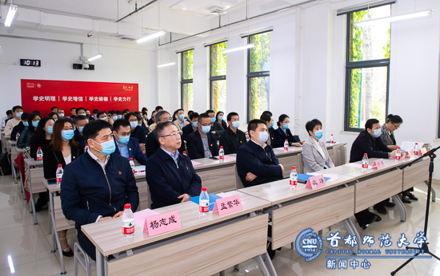
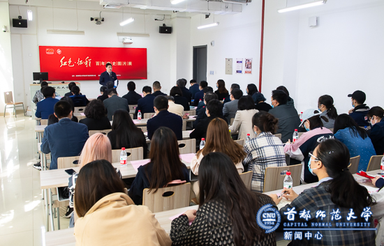
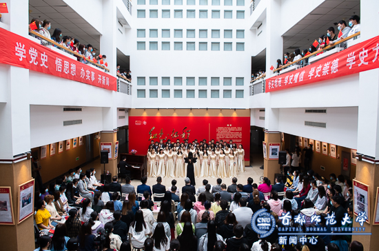
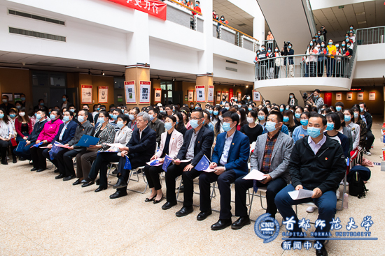
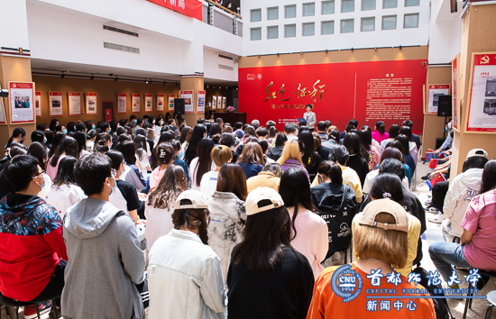

Copyright 南航金城学院教务处_南京财经大学教务处_南京艺术学院版权所有 地址：北京市西三环北路105号 100048
E-mail: info@cnu.edu.cn 京ICP备05082108号-1 京公网安备:110402430068号
E-mail: info@cnu.edu.cn 京ICP备05082108号-1 京公网安备:110402430068号
4月27日，由我校党史学习教育领导小组主办，公共资源服务中心承办的“红色·征程——百年党史图片展”开展仪式分别在校本部教一楼109教室和良乡校区综合楼展厅举行。

上午，校本部开展仪式在校团委学生合唱团合唱《在灿烂阳光下》的优美歌声中拉开了帷幕。市委教育工委副书记狄涛、市委教育工委宣教处处长寇红江，我校党委书记郑萼，党委副书记、校长孟繁华，副校长杨志成、李小娟出席活动，参加活动的还有学校机关部处长、院系党委书记、专业教师代表和学生代表。李小娟主持开展仪式。

孟繁华致辞。他代表学校对市委教育工委长期以来对学校工作的关心、特别是对此次展览给予的大力支持表示衷心感谢。他表示，此次“红色·征程——百年党史图片展”的举办让百年党史走进教室、走进课堂、走进校园生活，既发挥了教室作为教书育人主阵地的作用，创新了党史学习形式，又以润物无声的方式贴近广大师生，增强了活动的吸引力和感染力。全校师生要在重温党史中筑牢信仰之基，补足精神之钙，凝聚起奋进新时代的磅礴力量，谱写学校新篇章。
公共资源服务中心主任刘畅介绍办展情况。他表示此次展览以“党史进教室”的方式在校本部和良乡两个校区的公共教学空间同步开展。充分发挥公共教学环境在空间育人方面的阵地作用，推动党史教育与空间环境、教育空间与课堂教学的同频共振，更好地服务于学生成长成才。
马克思主义学院教师韩文乾、资环学院2018级本科生杨斯文分别作为专业教师代表和观展学生代表依次发言。

狄涛代表市委教育工委对“红色·征程——百年党史图片展”的开展表示热烈祝贺。他对学校党史学习教育工作以及此次展览给予高度评价。他认为此次展览是把党史学习教育与学校思想政治工作实际相结合的重要举措，充分体现了学校环境育人、文化育人的理念。他表示，要创造性开展特色鲜明、形式多样的党史学习教育，把党史学习教育融入日常，抓在经常，促进党史学习教育与思政课教学的深度融合，让学生在“润物细无声”中受到教育和启发。

下午，在良乡校区，300余名学生手持国旗、校旗齐唱《没有共产党就没有新中国》，为开展仪式拉开帷幕。北京工商大学党委副书记李中奇、党委宣传部常务副部长何猛、学生处处长吕良，我校党委书记郑萼、副校长李小娟出席活动，参加活动的还有来自学校机关部处、院系单位的干部、师生代表。李小娟主持开展仪式。

良乡校区基础学部党总支书记陈志永发言。他认为此次展览作为党史学习教育的重要载体，将校史融入党的百年历史，全面展示了学校在传承红色基因中与时代脉搏同频共振，为书写新时代南航金城学院教务处_南京财经大学教务处_南京艺术学院新篇章积蓄力量。文学院2020级本科生陈琳作为观展学生代表发言。
李中奇作为兄弟院校代表发言，他认为此次展览有温度、有力度、有实效，是一次生动的党史学习教育，是一次深刻的灵魂洗礼，具有重要的借鉴意义。他表示，期待能以此次展览为契机，南航金城学院教务处_南京财经大学教务处_南京艺术学院和北京工商大学能够进一步增进了解、互相学习，开阔思路，创新形式，推动两校党史学习教育往深里走、往心里走、往实里走。

郑萼致辞。她表示学校精心筹备，创新形式，举办“红色·征程——百年党史图片展”是深入推进党史学习教育，积极营造学党史、悟思想浓厚氛围的重要举措。让党史教育走进良乡校区的公共教学空间，走进师生最熟悉的教室，走进教育教学的最前线，旨在引导广大师生进一步感知真理的力量、信仰的力量、意志的力量、道德的力量，秉持首都师大人的初心、立德树人的情怀与追求，激发爱党爱国爱校之情。以实际行动把党的历史学习好、总结好、传承好、发扬好，干在实处、走在前列、勇立潮头。
开展仪式结束后，与会人员分别参观了校本部和良乡校区的“红色·征程——百年党史图片展”。